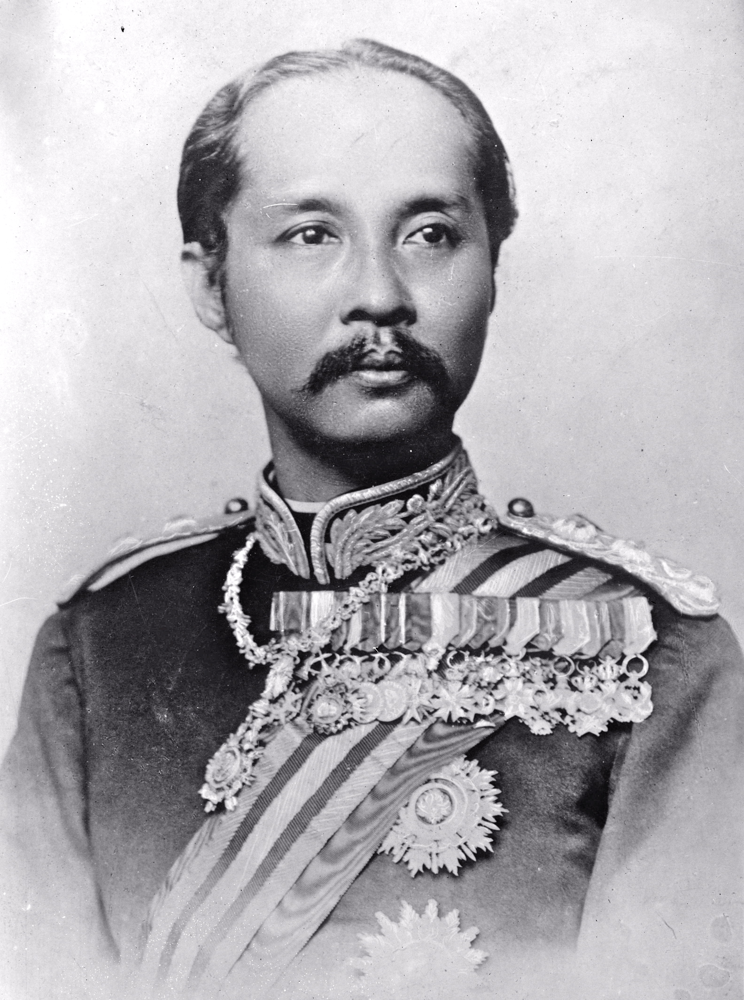
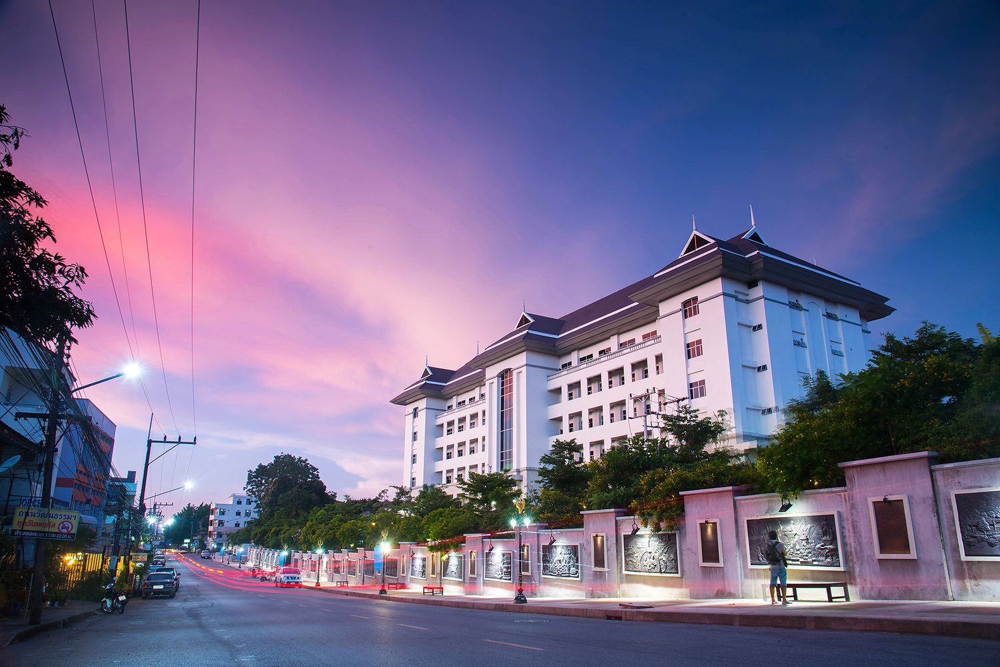
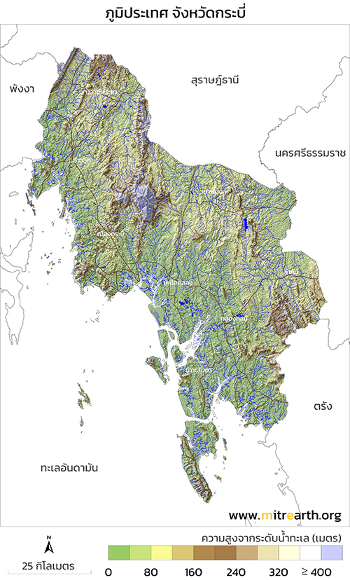

ประวัติของจังหวัดกระบี่
ประมาณปี พ.ศ. 2415 ในสมัยพระบาทสมเด็จพระจุลจอมเกล้าเจ้าอยู่หัว พระองค์ได้ทรงพระกรุณา โปรดเกล้าฯ ให้ยกฐานะขึ้นเป็นเมืองปกาสัย และพระราชทานนามว่า เมืองกระบี่ เมื่อได้ประกาศตั้งขึ้นเป็นเมืองแล้วโปรดเกล้าฯ ให้ตั้งที่ทำการอยู่ที่ตำบลกระบี่ใหญ่ในท้องที่อำเภอเมืองกระบี่ปัจจุบันมีหลวงเทพเสนาเป็นเจ้าเมืองกระบี่คนแรก จนในปี พ.ศ. 2418 เมืองกระบี่ได้แยกออกจากการปกครองของเมืองนครศรีธรรมราช เป็นเมืองจัตวาขึ้นตรงต่อกรุงเทพ และ ในปี พ.ศ. 2443 สมัยพระยารัษฎานุประดิษฐ์มหิศรภักดีเป็นสมุหเทศาภิบาลมณฑลภูเก็ต ได้ย้ายที่ตั้งเมืองไปอยู่ตำบลปากน้ำ ซึ่งอยู่ใกล้ปากอ่าวเป็นร่องน้ำลึก ให้เป็นที่ตั้งศาลากลางจังหวัดจนถึงปัจจุบันนี้

สภาพภูมิประเทศโดยทั่วไปของจังหวัดกระบี่ ทางตอนเหนือประกอบด้วยเทือกเขายาวทอดตัวไปในแนวเหนือใต้ สลับกับสภาพพื้นที่แบบลูกคลื่นลอนลาด และลอนชัน มีที่ราบชายฝั่งทะเลด้านตะวันตก บริเวณทางใต้ มีสภาพภูมิอากาศเป็นภูเขากระจัดกระจาย สลับกับพื้นที่แบบลูกคลื่น ส่วนบริเวณทางตอนใต้สุดและตะวันตกเฉียงใต้ มีสภาพพื้นที่เป็นแบบลูกคลื่นลอนลาดจนถึงค่อนข้างเรียบ และมีภูเขาสูง ๆ ต่ำ ๆ สลับกันไป บริเวณด้านตะวันตกมีลักษณะ เป็นชายฝั่งติดกับทะเลอันดามันยาวประมาณ 160 กิโลเมตร ประกอบด้วยหมู่เกาะน้อยใหญ่ประมาณ 130 เกาะ แต่เป็นเกาะที่มีประชากรอาศัยอยู่ประมาณ 13 เกาะ เกาะที่สำคัญได้แก่ เกาะลันตา เป็นที่ตั้งของอำเภอเกาะลันตา และเกาะพีพี ซึ่งอยู่ในเขตอำเภอเมืองกระบี่ เป็นสถานที่ท่องเที่ยวที่สวยงามติดอันดับของโลก บริเวณตัวเมืองมีแม่น้ำกระบี่ ยาวประมาณ 5 กิโลเมตร ไหลผ่านลงสู่ทะเลอันดามัน ที่ ตำบลปากน้ำ นอกจากนี้ยังมีคลองปกาสัย คลองกระบี่ใหญ่ และคลองกระบี่น้อย ซึ่งมี่ต้นกำเนิดมาจากเทือกเขาพนมเบญจา เทือกเขาที่สูงที่สุดในจังหวัดกระบี่
